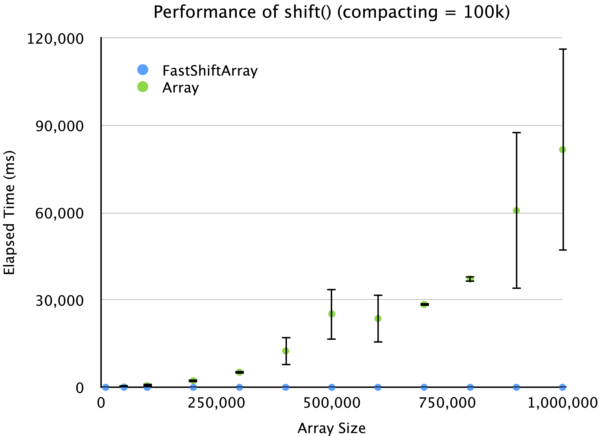
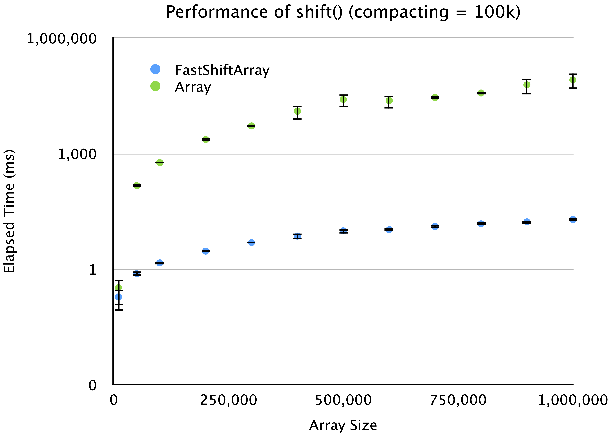
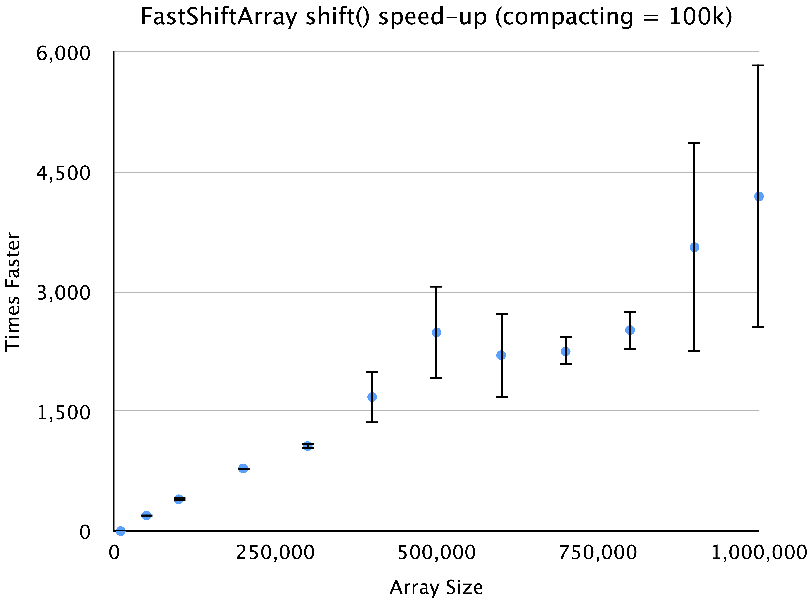

This implementation is designed to be a lightweight alternative to the standard JavaScript Array class, with a focus on performance and ease of use. It is particularly useful in scenarios where frequent shift operations are required, such as in data processing, event handling, and other applications where performance is critical. This drop-in replacement for the JavaScript Array class provides fast (approximate O(1)) shift() operations, and in some cases similar O(1) unshift() operations.
npm install fast-shift-array
Comparision of the FastShiftArray.shift() and Array.shift() function. Each table represents a comparisons of various
array sizes, for which half the array elements where shifted out of the array, through repeated calls to the shift()
function. Each row of each table represents 10 runs for the specified array size and number of shifts. The values are
the average number of milliseconds it took to complete all the shifts, followed by ± one standard-deviation.
The first table uses a compacting size of 105. This means that after 105 shifts, the first
105 elements are dropped using an Array.splice() function. The next table uses a compacting size of
104, and then the next table uses a compacting size of 1,000, and then 100.
| Array Size | Num Shifts | FastShiftArray (ms) | Array (ms) | Speed-up |
|---|---|---|---|---|
| 10,000 | 5,000 | 0.19 ± 0.11 | 0.33 ± 0.21 | 1.76 ± 0.16 |
| 50,000 | 25,000 | 0.76 ± 0.10 | 146.66 ± 2.32 | 196.21 ± 18.51 |
| 100,000 | 50,000 | 1.45 ± 0.02 | 581.62 ± 9.62 | 400.07 ± 4.05 |
| 200,000 | 100,000 | 2.93 ± 0.04 | 2,309.18 ± 19.80 | 787.30 ± 14.19 |
| 300,000 | 150,000 | 4.88 ± 0.21 | 5,202.80 ± 54.74 | 1,067.76 ± 39.13 |
| 400,000 | 200,000 | 7.19 ± 1.42 | 12,521.91 ± 5,009.20 | 1,682.12 ± 326.29 |
| 500,000 | 250,000 | 9.83 ± 1.35 | 25,242.45 ± 8,692.55 | 2,491.91 ± 583.89 |
| 600,000 | 300,000 | 10.54 ± 0.84 | 23,641.16 ± 8,428.45 | 2,205.86 ± 531.73 |
| 700,000 | 350,000 | 12.77 ± 1.29 | 28,522.37 ± 648.12 | 2,252.48 ± 181.72 |
| 800,000 | 400,000 | 14.89 ± 1.29 | 37,223.47 ± 782.26 | 2,519.99 ± 236.51 |
| 900,000 | 450,000 | 16.81 ± 1.57 | 60,779.80 ± 27,139.28 | 3,558.00 ± 1,315.03 |
| 1,000,000 | 500,000 | 19.32 ± 1.15 | 81,686.76 ± 34,683.43 | 4,194.94 ± 1,660.87 |

FastShiftArray.shift() performance versus JavaScript Array.shift() performance. Each data point is calculated for an array size and then calling the shift() function half as many times as the array size. For example, when the array size is 100,000, then the shift() function is called 50,000 times. Each data point shows the mean-value for 10 runs, and the error bars represent plus/minus one standard deviation. In this run, the compacting-size is 100k, which means that after 100k calls to the FastShiftArray.shift(), the shifted memory is reclaimed using the splice() function.

FastShiftArray.shift() performance versus JavaScript Array.shift() performance. This figure is the same as Figure 1, except that the y-axis is shown as a logarithmic scale. Each data point is calculated for an array size and then calling the shift() function half as many times as the array size. For example, when the array size is 100,000, then the shift() function is called 50,000 times. Each data point shows the mean-value for 10 runs, and the error bars represent plus/minus one standard deviation. In this run, the compacting-size is 100k, which means that after 100k calls to the FastShiftArray.shift(), the shifted memory is reclaimed using the splice() function.

FastShiftArray.shift() is faster than the JavaScript Array.shift(). Each data point is calculated for an array size and then calling the shift() function half as many times as the array size. For example, when the array size is 100,000, then the shift() function is called 50,000 times. Each data point shows the mean-value for 10 runs, and the error bars represent plus/minus one standard deviation. In this run, the compacting-size is 100k, which means that after 100k calls to the FastShiftArray.shift(), the shifted memory is reclaimed using the splice() function.
| Array Size | Num Shifts | FastShiftArray (ms) | Array (ms) | Speed-up |
|---|---|---|---|---|
| 10,000 | 5,000 | 0.15 ± 0.00 | 0.22 ± 0.01 | 1.52 ± 0.09 |
| 50,000 | 25,000 | 0.74 ± 0.01 | 145.53 ± 1.24 | 195.51 ± 2.03 |
| 100,000 | 50,000 | 1.50 ± 0.05 | 577.66 ± 6.52 | 384.46 ± 11.09 |
| 200,000 | 100,000 | 5.08 ± 0.45 | 4,488.27 ± 692.40 | 876.60 ± 84.75 |
| 300,000 | 150,000 | 4.56 ± 0.11 | 5,175.45 ± 54.34 | 1,136.44 ± 24.96 |
| 400,000 | 200,000 | 6.12 ± 0.15 | 9,189.89 ± 75.51 | 1,502.04 ± 34.50 |
| 500,000 | 250,000 | 10.39 ± 0.16 | 32,347.06 ± 265.23 | 3,114.48 ± 41.13 |
| 600,000 | 300,000 | 9.43 ± 0.16 | 20,807.97 ± 215.47 | 2,206.01 ± 37.60 |
| 700,000 | 350,000 | 13.90 ± 0.17 | 65,655.05 ± 456.49 | 4,725.68 ± 76.48 |
| 800,000 | 400,000 | 12.20 ± 0.25 | 36,956.30 ± 331.51 | 3,029.61 ± 63.40 |
| 900,000 | 450,000 | 17.74 ± 0.31 | 109,389.23 ± 926.44 | 6,167.35 ± 76.99 |
| 1,000,000 | 500,000 | 15.58 ± 0.28 | 58,016.47 ± 658.31 | 3,724.07 ± 63.58 |
| Array Size | Num Shifts | FastShiftArray (ms) | Array (ms) | Speed-up |
|---|---|---|---|---|
| 10,000 | 5,000 | 0.15 ± 0.00 | 0.22 ± 0.00 | 1.48 ± 0.03 |
| 50,000 | 25,000 | 0.74 ± 0.01 | 145.44 ± 0.62 | 196.03 ± 2.84 |
| 100,000 | 50,000 | 1.49 ± 0.04 | 576.35 ± 1.53 | 386.99 ± 10.14 |
| 200,000 | 100,000 | 5.38 ± 0.27 | 4,744.86 ± 74.10 | 883.71 ± 35.92 |
| 300,000 | 150,000 | 4.54 ± 0.07 | 5,207.01 ± 122.83 | 1,148.37 ± 28.69 |
| 400,000 | 200,000 | 6.35 ± 0.11 | 9,194.31 ± 63.61 | 1,449.43 ± 24.40 |
| 500,000 | 250,000 | 10.38 ± 0.13 | 32,247.87 ± 175.34 | 3,108.41 ± 33.56 |
| 600,000 | 300,000 | 9.14 ± 0.04 | 20,673.69 ± 101.21 | 2,261.81 ± 14.28 |
| 700,000 | 350,000 | 14.02 ± 0.17 | 65,495.56 ± 213.67 | 4,672.08 ± 59.80 |
| 800,000 | 400,000 | 12.52 ± 0.07 | 36,892.13 ± 274.72 | 2,947.53 ± 25.56 |
| 900,000 | 450,000 | 17.68 ± 0.38 | 108,960.67 ± 286.28 | 6,164.14 ± 127.86 |
| 1,000,000 | 500,000 | 15.26 ± 0.11 | 58,560.16 ± 901.81 | 3,838.26 ± 65.69 |
| Array Size | Num Shifts | FastShiftArray (ms) | Array (ms) | Speed-up |
|---|---|---|---|---|
| 10,000 | 5,000 | 0.15 ± 0.00 | 0.22 ± 0.00 | 1.44 ± 0.04 |
| 50,000 | 25,000 | 0.75 ± 0.01 | 145.33 ± 0.39 | 194.69 ± 2.58 |
| 100,000 | 50,000 | 1.50 ± 0.02 | 576.41 ± 3.01 | 385.17 ± 3.24 |
| 200,000 | 100,000 | 5.25 ± 0.09 | 4,728.47 ± 20.44 | 900.49 ± 17.42 |
| 300,000 | 150,000 | 4.67 ± 0.11 | 5,191.95 ± 54.82 | 1,111.66 ± 27.32 |
| 400,000 | 200,000 | 6.37 ± 0.08 | 9,235.89 ± 177.75 | 1,450.07 ± 19.89 |
| 500,000 | 250,000 | 10.80 ± 0.65 | 32,178.85 ± 53.26 | 2,989.18 ± 160.44 |
| 600,000 | 300,000 | 9.29 ± 0.20 | 20,645.45 ± 85.35 | 2,224.45 ± 50.57 |
| 700,000 | 350,000 | 14.33 ± 0.37 | 65,346.82 ± 109.40 | 4,562.19 ± 113.05 |
| 800,000 | 400,000 | 12.90 ± 0.69 | 36,871.75 ± 367.28 | 2,865.20 ± 130.48 |
| 900,000 | 450,000 | 17.78 ± 0.16 | 108,940.82 ± 415.86 | 6,128.48 ± 61.86 |
| 1,000,000 | 500,000 | 15.82 ± 0.35 | 58,032.08 ± 261.73 | 3,670.83 ± 78.81 |